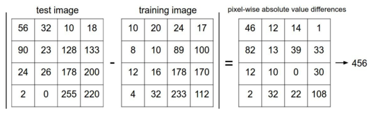

图像分类
所谓图像分类问题，就是已有固定的分类标签集合，然后对于输入的图像，从分类标签集合中找出一个分类标签，最后把分类标签分配给该输入图像。虽然看起来挺简单的，但这可是计算机视觉领域的核心问题之一，并且有着各种各样的实际应用。在后面的课程中，我们可以看到计算机视觉领域中很多看似不同的问题（比如物体检测和分割），都可以被归结为图像分类问题。
以下图为例，图像分类模型读取该图片，并生成该图片属于集合 {cat, dog, hat, mug}中各个标签的概率。需要注意的是，对于计算机来说，图像是一个由数字组成的巨大的3维数组。在这个例子中，猫的图像大小是宽248像素，高400像素，有3个颜色通道，分别是红、绿和蓝（简称RGB）。如此，该图像就包含了248X400X3=297600个数字，每个数字都是在范围0-255之间的整型，其中0表示全黑，255表示全白。我们的任务就是把这些上百万的数字变成一个简单的标签，比如“猫”。
图像分类的任务，就是对于一个给定的图像，预测它属于的那个分类标签。图像是3维数组，数组元素是取值范围从0到255的整数。数组的尺寸是宽度x高度x3，其中这个3代表的是红、绿和蓝3个颜色通道。
困难和挑战
对于人来说，识别出一个像“猫”一样视觉概念是简单至极的，然而从计算机视觉算法的角度来看就值得深思了。
- 视角变化（Viewpoint variation）：同一个物体，摄像机可以从多个角度来展现。
- 大小变化（Scale variation）：物体可视的大小通常是会变化的（不仅是在图片中，在真实世界中大小也是变化的）。
- 形变（Deformation）：很多东西的形状并非一成不变，会有很大变化。
- 遮挡（Occlusion）：目标物体可能被挡住。有时候只有物体的一小部分（可以小到几个像素）是可见的。
- 光照条件（Illumination conditions）：在像素层面上，光照的影响非常大。
- 背景干扰（Background clutter）：物体可能混入背景之中，使之难以被辨认。
- 类内差异（Intra-class variation）：一类物体的个体之间的外形差异很大，比如椅子。这一类物体有许多不同的对象，每个都有自己的外形。
面对以上所有变化及其组合，好的图像分类模型能够在维持分类结论稳定的同时，保持对类间差异足够敏感。
数据驱动方法
图片分类无法像排序之类的算法一样可以通过硬编码实现，只能给计算机很多数据，然后实现学习算法，让计算机学习到每个类的外形。这种方法，就是数据驱动方法
图像分类流程
- 输入：输入是包含N个图像的集合，每个图像的标签是K种分类标签中的一种。这个集合称为训练集。
- 训练：这一步的任务是使用训练集来学习每个类到底长什么样。一般该步骤叫做训练分类器或者学习一个模型。
- 评价：让分类器来预测它未曾见过的图像的分类标签，并以此来评价分类器的质量。
近邻分类器
将训练集输入并保存下来，将测试数据与训练数据挨个进行比较，找到最接近的一张图片，该图片的标签即为测试数据的预测标签。
如何衡量两张图片的距离
L1距离（曼哈顿距离）

L2距离（欧几里得距离）
K近邻分类
为什么一定是找到最接近的那一张图片呢？当然也可以找到最接近的K张图片，然后在这K张中以投票的方式决定测试数据的预测标签，这就是K近邻分类器
K近邻能使分类边界变得更加平滑，防止过拟合。即便测试数据与某一训练数据（绿色）距离为0，但若周围另外四个点都为红色，则该测试数据的预测标签也为红色
超参数
在K近邻分类器中，距离计算方式的选择和K值的选择都是无法直接确定的，只能通过不断地尝试才能找到最适合的值，这种就叫做超参数
超参数不能使用测试集进行调试，那样会使得调好的参数无法很好地适应新的数据。测试数据永远只能用来最后评估分类器的准确度。
所以这里使用的方法是在训练数据中划一部分出来做“验证集”，专门用来调试超参数，剩下的数据依然用作训练数据。
如果训练数据本身就很少的情况下，可以将训练数据分成几份，依次用作验证集，并进行交叉验证：
记录下每次交叉验证的准确率，求平均值，将平均准确率最高的那个K值就是我们需要设置的值